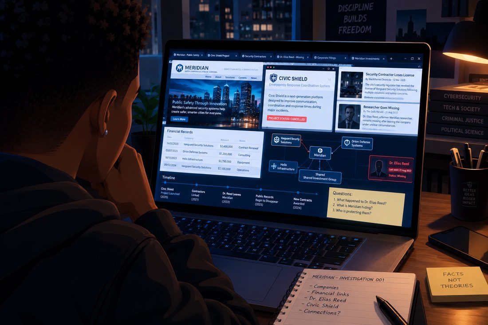
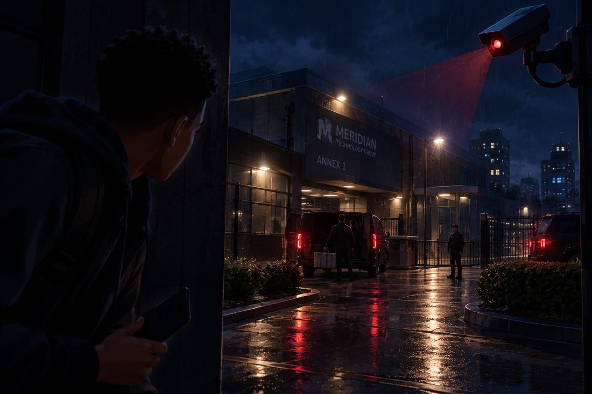
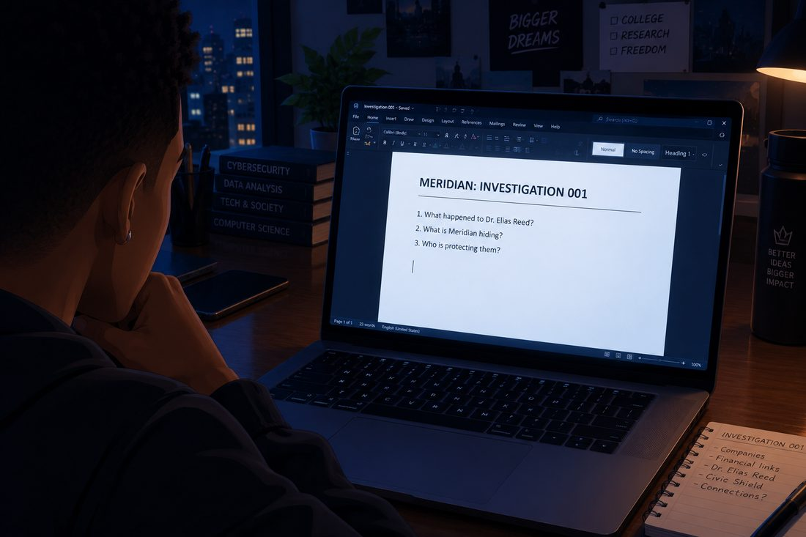
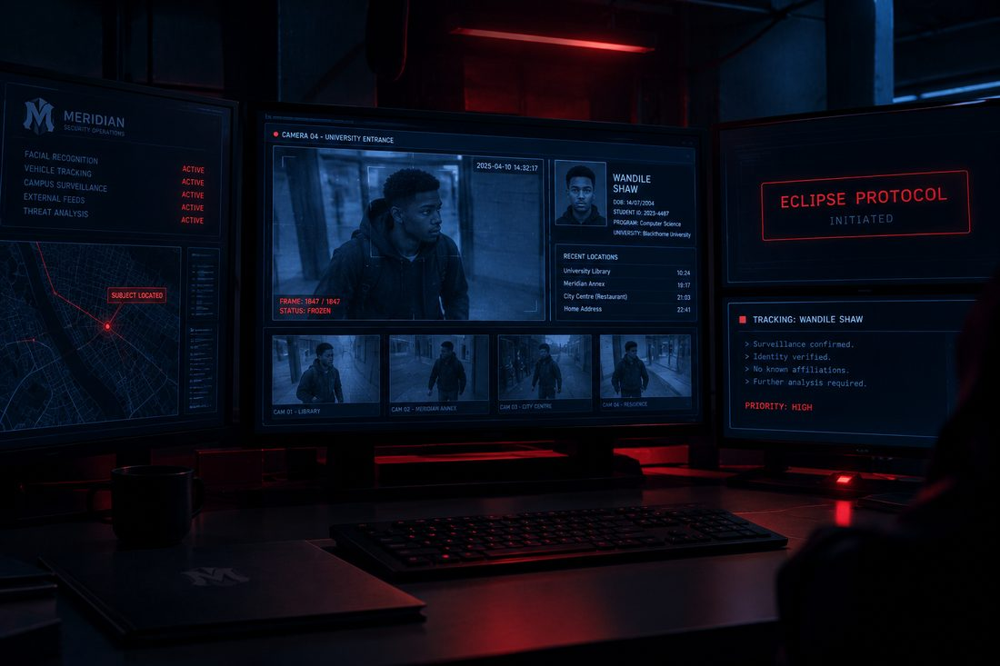

ECLIPSE
Episode 1 · The Other Life
Prologue
The 911 Call
11:47 PM
Rain.
Nothing else at first, just rain hammering a windshield in the dark.
Then a woman's voice came through the phone.
"911, what's your emergency?"
A man answered in a whisper.
"I think someone's watching us."
"Sir, where are you calling from?"
He glanced out through the window of a parked car. Across the street, two black SUVs sat outside a research building. Men in dark jackets were loading metal cases into the vehicles.
"I work at the Meridian research facility. Something happened here tonight. They told us it was an accident, but—"
A door slammed behind him.
He froze.
"Sir? Are you still there?"
The man looked into his rear-view mirror.
A black vehicle had pulled up behind him.
"Oh, no..."
The call cut out.
Chapter 1
The Ordinary Life
8:15 AM · Blackthorne University
Wandile Shaw is running late.
Not because he's irresponsible. Because he stayed up far too late finishing an assignment and then spent another hour fixing a laptop problem he couldn't leave alone.
He walks across campus with his backpack over one shoulder, a takeaway coffee in his hand, and his phone buzzing constantly.
Ethan responds with a laughing emoji.
At the campus café, Olivia and Charlotte are waiting for him.
Olivia looks up from her laptop.
"Wow. He lives."
Charlotte takes one look at his coffee.
"Is that your breakfast?"
"It's a drink."
"That's not what I asked."
Wandile sits down.
"Good morning to you too."
They laugh. For a moment, Wandile is just another college student with friends who won't leave him alone.
Then Olivia notices something.
"Wandile, did you sleep at all?"
"Of course."
"How much?"
He pauses.
"Define sleep."
Charlotte shakes her head. "We're getting him a social life."
"I have a social life."
"Name three things you've done this week that weren't related to studying."
Wandile opens his mouth.
Nothing comes out.
Ethan points at him triumphantly. "Exactly!"
For the first time that morning, Wandile genuinely laughs.
He doesn't know it yet, but these ordinary moments will become the moments he fights hardest to protect.
Chapter 2
The Perfect Man
2:00 PM · University auditorium
A crowd gathers for a special guest lecture.
The speaker is Adrian Voss, billionaire entrepreneur, founder of several technology companies, and one of the most respected philanthropists in Blackthorne City.
His company has funded university scholarships, public safety technology, and research projects.
Onstage, Adrian looks completely at ease.
"Technology should make people's lives safer," he tells the audience. "But progress means nothing if we forget the people it's supposed to serve."
The room applauds.
Wandile watches from the middle rows, interested despite himself.
Adrian is polished, intelligent, and unusually good at answering difficult questions without sounding defensive.
After the talk, Wandile gets caught in a small group meeting the guest.
Adrian shakes his hand.
"Wandile Shaw, correct? Computer science?"
Wandile looks surprised. "Yes, sir."
"I read the student research proposals. Yours caught my attention."
"Hopefully for the right reasons."
Adrian smiles.
"People who ask difficult questions tend to make the best researchers."
They speak briefly about technology, security, and the responsibility that comes with powerful tools.
Adrian seems sincere.
Before Wandile leaves, Adrian gives him a business card.
"If you ever want to discuss your ideas, my office welcomes promising young minds."
"Thank you, Mr. Voss."
They shake hands again.
A photograph is taken of them together.
Neither man thinks much of it.
And that is the dangerous part.
Adrian has just met the young man who will eventually threaten his entire operation.
And he has absolutely no idea.
Chapter 3
Something Doesn't Add Up
6:38 PM · Wandile's house

Wandile sits at his desk, the city lights visible through his window.
His laptop displays a university research article about Meridian's new public surveillance system.
The project is presented as a breakthrough: connected cameras, predictive software, faster emergency responses.
But something bothers him.
He opens a second tab.
Then a third.
A report about a security contractor that lost its license.
A short news story about a missing researcher.
A public record showing that the same contractor received a new contract through a different company barely two weeks later.
Wandile leans closer to the screen.
The names don't match.
The addresses don't match.
But the financial connections do.
He begins building a timeline.
One company leads to another. Several companies lead back to a shared investment group.
And that group has a connection to Meridian.
"Okay," he mutters. "That's interesting."
He finds the name of the researcher who disappeared.
DR. ELIAS REED.
The same researcher who had worked on a restricted security project before leaving Meridian.
Wandile searches for the man's last public statement.
One sentence catches his attention:
"The system is no longer being used for the purpose we were promised."
Wandile sits back.
He isn't a superhero. He doesn't have special powers or access to classified files.
But he knows what a pattern looks like.
And this pattern is wrong.
Chapter 4
A Visitor After Dark
10:26 PM · Blackthorne Financial District

Wandile has spent hours checking public information. One detail keeps resurfacing: a decommissioned Meridian technology annex near the financial district.
He doesn't intend to break into anything.
He tells himself he's only going to observe the building from a public street and see whether the records match what he found.
It's a terrible plan.
He knows that.
Which is why he brings a small camera, a flashlight, and a compact emergency kit.
The building looks abandoned, but a light moves behind one of the upper windows.
A delivery van enters through a side gate.
Two security officers follow it inside.
Wandile stays across the street, recording what he can from a distance.
Then he notices a third man.
The man isn't wearing a uniform. He carries no visible equipment. He simply stands near the entrance, watching the guards.
One of the guards approaches him and hands him a small data case.
The man checks it, says something Wandile can't hear, and disappears inside.
Wandile photographs the vehicle's registration and checks the time.
Suddenly, the light above the street flickers.
He looks up.
A camera mounted on the building has turned directly toward him.
Wandile lowers his phone.
A red indicator appears on the camera.
He steps away from the wall.
A voice comes through a speaker near the gate.
"Sir? Can we help you?"
Wandile walks calmly toward the main road.
"I'm leaving."
"Please wait a moment."
He doesn't wait.
He turns the corner, crosses the road with the traffic, and enters a crowded late-night convenience store.
A minute later, he checks through the front window.
A security vehicle rolls slowly past.
They haven't seen him enter the store.
Probably.
For the first time that night, Wandile understands something important:
Finding the truth is one thing. Surviving long enough to prove it is another.
Chapter 5
The Decision
12:04 AM · Wandile's house
His front door closes.
He locks it, checks the windows, and goes straight to his desk.
He uploads his photographs to an encrypted folder and creates a second copy of his research.
Then he pauses.
On his screen is the photograph from the university event.
Wandile and Adrian Voss, smiling and shaking hands.
Beside it is a picture of the Meridian annex.
The same organisation that Adrian publicly describes as a force for good may be connected to something far more sinister.
Wandile doesn't have enough evidence to accuse him.
Not yet.
He opens a blank document.

At the top, he types:
He stares at the screen.
Then he adds one more line.
He saves the document.
For now, he will investigate quietly. Gather evidence. Find out who is involved.
He has no plan to become a vigilante.
He has no costume.
No name.
No underground headquarters.
Just a computer, a growing list of questions, and a feeling that he has stepped into something much bigger than himself.
Chapter 6
Elsewhere
1:19 AM · Meridian headquarters
A secure room sits high above Blackthorne City.
Screens display maps, security feeds, financial reports, and confidential project updates.
Adrian Voss stands beside a glass wall overlooking the city.
An executive approaches him.
"The annex reported someone observing the facility tonight."
Adrian turns.
"An employee?"
"We don't believe so. Young male. He left before security could identify him."
"Did he enter the building?"
"No."
"Then find out what he was doing there. Quietly."
The executive nods and leaves.
Adrian returns to the screens.
A report opens on his desk. It contains the university event photographs, including one of Adrian shaking hands with Wandile Shaw.
He glances at it without interest and closes the report.
Wandile's name means nothing to him beyond that of a promising student.
Adrian has no reason to connect him with the annex.
No reason to suspect him.
And no reason to remember the handshake.
A second screen lights up.
UNIDENTIFIED OBSERVER — INVESTIGATION PENDING
Adrian studies it.
"Let's see what you're looking for," he murmurs.
Outside, Blackthorne City glitters beneath the rain.
And somewhere across town, Wandile Shaw is already preparing to look deeper.
After the Credits
The Protocol
2:03 AM · An unknown location

A figure sits in front of several monitors.
On one screen is the security footage of the annex.
The footage pauses on Wandile's silhouette.
A second screen shows a file marked ECLIPSE PROTOCOL.
The figure opens a new folder and types:
SUBJECT: UNKNOWN
THREAT LEVEL: UNDETERMINED
A gloved hand closes the laptop.
"Someone's asking the wrong questions."
END OF EPISODE 1